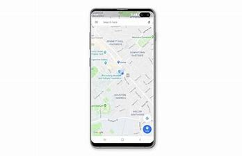
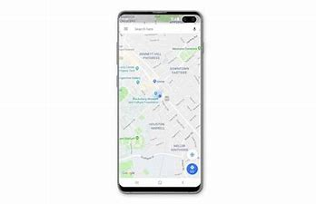

The Sinharaja World Heritage Site is the largest remnant of Sri Lanka's forests and contains the Sinharaja Forest Dynamics Plot.
The Sinharaja Forest Dynamics Plot was established in 1993 by the University of Peradeniya in Sri Lanka; Forest Department,
Sri Lanka; and ForestGEO. Currently the plot is jointly monitored by the Faculty of Applied Sciences, Uva Wellassa University;
University of Peradeniya in Sri Lanka; the Forest Department, Sri Lanka; and ForestGEO.
Topographically, the Forest Dynamics Plot spans the elevational range of 424 m to 575 m asl. The Sinharaja FDP includes a
valley lying between two slopes, a steeper higher slope facing south-west and a less-steep slope facing north-east.
The Forest Dynamics Plot is representative of the ‘ridge-steep slope- valley’ landscape of southwestern Sri Lanka’s lowland
through mid-elevational rain forests.
The forests of Sri Lanka display relatively low diversity but very high endemism. For example, in the Sinharaja World Heritage
Site, 70% of its 190 tree species are endemic. The Sinharaja Forest Dynamics Plot contains one-half of the species in the World
Heritage Site's lowland rain forests and one-quarter of all of Sri Lanka's tree species. The forest demographic work at the plot
complements ongoing silvicultural and forest restoration studies of the Uva Wellassa University; University of Peradeniya; Forest
Department, Sri Lanka; and Yale Forest School. Other ongoing research includes a study of seedling recruitment of dominant canopy
species in and around the study plot that has been running since 1999, and a study of biomass dynamics in the forest.
Sinharaja Rain Forest in Sri Lanka is probably the best kept secret in Asia .Sinharaja is one of the least disturbed and
biologically unique lowland rain forestsin Sri Lanka.Sinharaja Forest Reserve is a national park and a biodiversity hotspot
in Sri Lanka.It is of international significance and has been designated a Biosphere Reserve and World Heritage Site by UNESCO.
From Northern or western parts of the country you can reach Sinharaja Forest Reserve via Ratnapura, Kiriella, Kalawana, Weddala.
From the South you can enter Sinharaja Rain Forest from Deniya. Coming form Hambantota, Udawalawe you can enter Sinharaja from
Rakwana side.Sinharaja is a vast forest which covers an area of approximately 11,000ha, is now a UNESCO World Heritage Site.
Located quite close to Ratnapura with approaches from other directions as well, this dense rain forest has an amazing variety
of flora and fauna, and this has caught the attention of scientists as well as nature lovers who make excursions into the jungle
to explore and appreciate its many natural wonders. Among these are cool waterfalls, rushing streams and crystal clear freshwater streams. A lot of attention and emphasis is now being placed on the conservation of this precious treasure that is Sinharaja.
 
